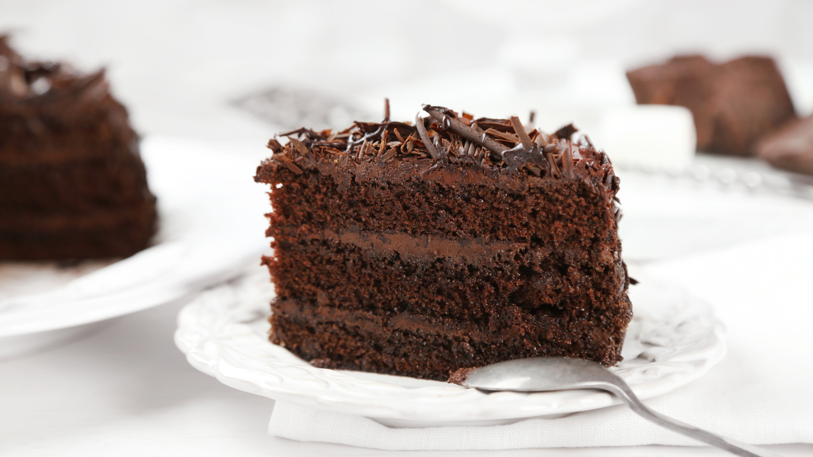

Receita de Bolo Nega Maluca
Ingredientes

- 6 ovos
- 4 xícaras de farinha de trigo
- 2 xícaras de chocolate em pó
- 3 xícaras de açúcar
- 1 xícara de óleo
- 2 xícaras de água quente
- 1 colher de fermento
Modo de preparo
- Unte a forma e pré-aqueça o forno.
- Misture os ovos e o açúcar.
- Adicione a farinha e o chocolate.
- Coloque o óleo e a água vai adicionando aos poucos.
- Adicione o fermento.
- Leve ao forno por aproximadamente 40 minutos.